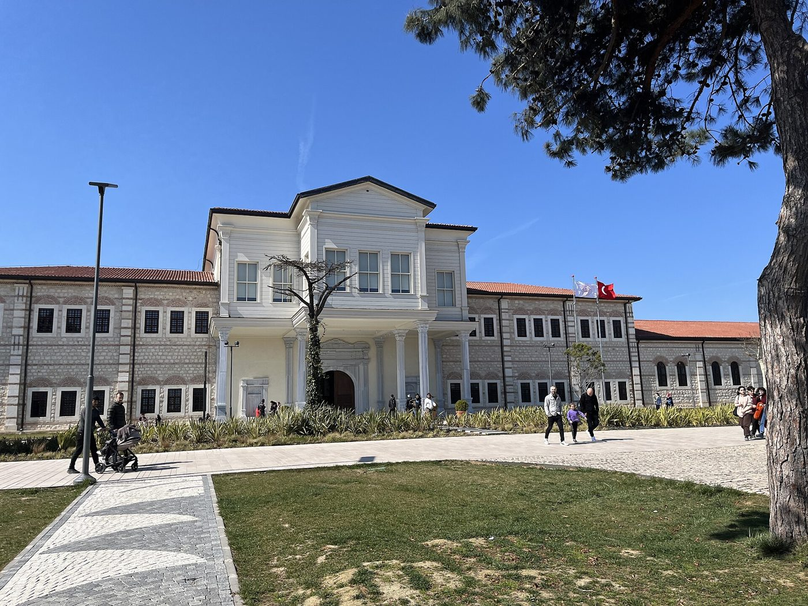

Announcement (30 September 2026): The 4th European Biblio/Poetry Therapy Conference will be held in Istanbul on 16–18 September 2027. The call for papers will open on 15 December 2026.
Welcome
The European Biblio/Poetry Therapy Conference is the annual scientific meeting of researchers and practitioners working in bibliotherapy, poetry therapy and therapeutic reading and writing. Following the conferences in Budapest (2024), Jyväskylä (2025) and Canterbury (2026), the fourth conference will be held in Istanbul on 16–18 September 2027.
The conference is hosted by Rami Library (Rami Kütüphanesi) and organised in partnership with the Marmara University Department of Information and Records Management, the Ministry of Culture and Tourism, General Directorate of Libraries and Publications, and the Bibliotherapy Association.
The programme consists of two conference days (16–17 September) with keynote lectures, paper sessions, poster presentations and workshops, and a cultural programme day in Istanbul (18 September). The conference language is English.
Venue

The conference is held at Rami Library, a public library of the Ministry of Culture and Tourism housed in the restored eighteenth-century Rami Barracks in the district of Eyüpsultan. Opened in 2023, it is the largest library in Istanbul, with 36,000 m² of indoor space, 51,000 m² of grounds and seating for 4,200 readers, and is open 24 hours a day.
Sessions take place in the library's conference hall and seminar rooms. The venue is 15–20 minutes from the historic peninsula and is served by tram line T4.
Conference theme
The 2027 conference takes as its theme Biblio/Poetry Therapy Across Cultures: Libraries, Research and Practice. Contributions are invited on the theoretical foundations, research evidence, professional practice and teaching of biblio/poetry therapy, with particular attention to:
- the role of libraries and librarians in developmental and clinical bibliotherapy;
- the application of biblio/poetry therapy in different cultural, linguistic and literary contexts;
- the development of the evidence base, research methods and outcome measurement;
- education, training, supervision and professional standards.
The full list of topics and the submission guidelines are available on the Call for Papers page.
Participation
The conference is intended for bibliotherapists and poetry therapists, psychologists, psychotherapists and counsellors, librarians and information professionals, educators, social workers and health professionals, authors, and researchers and students in the related disciplines. Registration will open on 10 May 2027. Fees and conditions are listed on the Registration page.
Previous conferences
4–5 October 2024
2–4 October 2025
30 September – 3 October 2026
16–18 September 2027